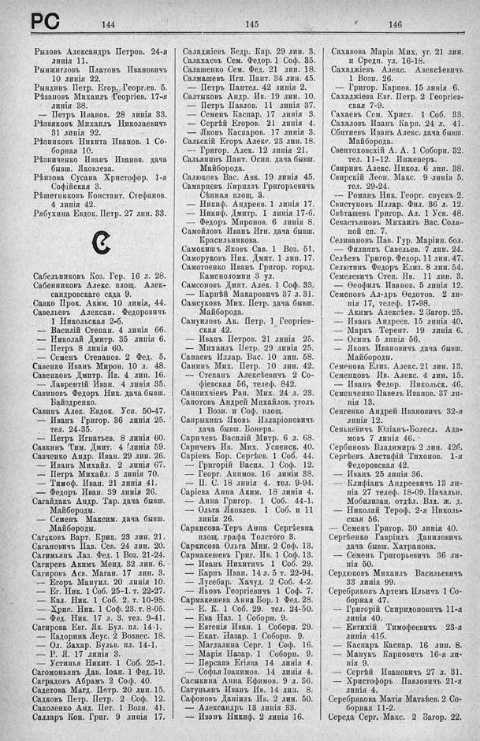

Лист источника 554
Скан

Распознанный текст
РС
144
Рыловъ Александръ Петров. 24-я
линія 11.
Рынжигловъ Платонъ Ивановичъ
10 линія 22.
Рындинъ Петр. Егор. Георг.ев. 5.
Рѣзановъ Михаилъ Георгіев. 17-я
линія 38.
— Петръ Иванов. 28 линія 33.
Рѣзвяковъ Михаилъ Николаевичъ
31 линія 92.
Рѣзниковъ Никита Иванов. 1 Со-
борная 10.
Рѣзниченко Иванъ Иванов. дача
бывш. Яковлева.
Рѣизова Сусана Христофор. 1-я
Софійская 3.
Рѣшетниковъ Констант. Стефанов.
4 линія 42.
Рябухина Евдок. Петр. 27 лин. 33.
С
Сабельниковъ Коз. Гер. 16 л. 28.
Сабенниковъ Алекс. площ. Алек-
сандровскаго сада 9.
Савко Прок. Аким. 10 линія, 44.
Савельевъ Алексан. Федоровичъ
1 Никольская 2-б.
— Василій Степан. 4 линія 66.
— Николай Дмитр. 35 линія 6.
— Петръ 8 линія 60.
— Семенъ Степанов. 2 Фед. 5.
Савенко Иванъ Мирон. 10 л. 48.
Савенковъ Дмитр. Ив. 4 лин. 16.
— Лаврентій Иван. 4 линія 35.
Савиновъ Федоръ Ник. дача бывш.
Байздренко.
Савинъ Алек. Евдок. Усп. 50-47.
— Иванъ Григор. 36 линія 25.
тел. 24-35.
— Петръ Игнатьев. 8 линія 60.
Савкинъ Тим. Дмит. 4 линія 59.
Савченко Андр. Иван. 29 лин. 26.
— Иванъ Михайл. 2 линія 67.
— Петръ Михайл. 3 линія 70.
— Тимоф. Иван. 21 линія 41.
— Федоръ Иван. 39 линія 26.
Сагайдакъ Андр. Тар. дача бывш.
Майбороды.
— Семенъ Максим. дача бывш.
Майбороды.
Сагаковъ Варт. Крик. 23 лин. 21.
Сагановичъ Пав. Сев. 24 лин. 20.
Сагимьянъ Лаз. Фед. 1 Воз. 21-24.
Сагиревъ Акимъ Менд. 32 лин. 6.
Сагировъ Асв. Маган. 17 лин. 3.
— Егоръ Мануил. 20 линія 10.
— Ег. Ник. 1 Соб. 25–1. т. 22-27.
— Кал. Ник. 1 Соб. 2. т. 10-98.
— Хрис. Ник. 1 Соф. 23. т. 8-05.
— Фед. Ник. 17 л. 3. тел. 9-41.
Сагирова Евг. Як. Бул. пл. 14-1.
— Кадорина Леус. 2 Вознес. 18.
— Ол. Захар. Бульв. пл. 14-1.
— Р. Я. 17 линія 3.
— Устинья Никит. 1 Соб. 25-1.
Сагомоньянъ Дав. Іоан. 1 Фед. 19.
Саградовъ Абрамъ 2 Соф. 40.
Садегова Магд. Петр. 20 лин. 15.
Садковъ Петр. Петр. 2 Соф. 12.
Саколенко Анд. Пет. 1 Возн. 41.
Салляръ Кон. Григ. 9 линія 17.
145
Саладжіевъ Бедр. Кар. 29 лин. 3.
Салахасъ Сем. Федор. 1 Соф. 35.
Салашенко Сем. Фед. 21 лин. 18.
Салмашевъ Игн. Пант. 34 лин. 45.
— Петръ Пантел. 42 линія 2.
Салтыковъ Андр. Ив. 19 лин. 10.
— Петръ Павлов. 11 линія 37.
— Семенъ Каспар. 17 линія 3.
— Сергѣй Егоров. 21 линія 4.
— Яковъ Каспаров. 17 линія 3.
Сальскій Егоръ Алекс. 23 лин. 18.
— Григор. Алек. 12 линія 21.
Сальянинъ Пант. Осип. дача бывш.
Майборода.
Салюковъ Вас. Авк. 19 линія 45.
Самарцевъ Кириллъ Григорьевичъ
Сѣнная площ. 3.
— Никиф. Андреев. 1 линія 17.
— Никиф. Дмитр. 1 линія 17-б.
— Федоръ Миронов. 6 линія 8.
Самойловъ Иванъ Игн. дача бывш.
Красильникова.
Самокишъ Яковъ Сав. 1 Воз. 51.
Саморуковъ Ник. Дмит. 1 лин. 17.
Самотоенко Иванъ Григор. город.
Каменоломни 3 ул.
Самсоновъ Дмит. Алек. 1 Соф. 33.
— Карпѣй Макаровичъ 37 л. 31.
Самсуковъ Мих. Петр. дача бывш.
Майборода.
Самуиловъ Ак. Петр. 1 Георгіев-
ская 42.
— Иванъ Петров. 21 линія 25.
— Михаилъ Петр. 29 линія 25.
Санаевъ Иллар. Вас. 10 лин. 58.
Санинъ Мих. Петр. 10 лин. 42.
— Степанъ Алексѣевичъ 2 Со-
фіевская 56, телеф. 842.
Санпихчіевъ Рап. Мих. 24 л. 23.
Сапотовъ Андрей Михайлов. уголъ
1 Возн. и Соф. площ.
Сапрыкинъ Яковъ Илларіоновичъ
дача бывш. Бонера.
Саричевъ Василій Митр. 6 л. 68.
Саричевъ Ив. Мих. Успенск. 40.
Сарiевъ Бор. Сергѣев. 1 Соб. 44.
— Григорій Васил. 1 Соф. 12.
— Георг. Акимов. 16 линіи 38.
— П. С. 18 линія 4. тел. 9-94.
Сарiева Анна Аким. 18 линіи 4.
— Анна Григор. 1 Соб. 44-1.
— Ольга Яковлев. 1 Соб. и 11
линія 26.
Саркисова-Теръ Анна Сергѣевна
площ. графа Толстого 3.
Саркисова Ольга Мин. 2 Соф. 13.
Сармакешевъ Григ. Ив. 1 Соф. 13.
— Иванъ Никитичъ 1 Соб. 29.
— Карпъ Иван. 14 л. 5 т. 22-94.
— Лусебар. Хачуд. 2 Соб. 4-2.
— Яковъ Георгіевичъ 1 Соф. 7.
Сармакешева Анна Бор. 1 Фед. 28.
— Е. К. 1 Соб. 29. тел. 24-50.
— Ева Наз. 1 Соборн. 9.
— Евгенія Иван. 1 Соборн. 29.
— Екат. Назар. 1 Соборн. 9.
— Магдалина Серг. 1 Соф. 16.
— Марія Назар. 1 Соборн. 9.
— Персапэ Егіява 14 линія 4.
— Софья Іоакимов. 14 линія 4.
Саськина Анна Ефимов. 9 л. 56.
Сатуньянъ Иванъ Ив. 14 лиз. 8.
Сафоновъ Даніилъ Ив. 2 лин. 50.
— Александръ 13 линія 33.
— Иванъ Никиф. 2 линія 16.
146
Сахавова Марія Мих. уг. 21 лин.
и Средн. ул. 16-18.
Сахаджіевъ Алекс. Алексѣевичъ
1 Возн. 26.
— Григор. Карпов. 15 линія 6.
Сахаджіева Евг. Петр. 2 Георгіев-
ская 7-9.
Сахаевъ Сем. Христ. 1 Соб. 33.
Сахаловъ Иванъ Карп. 24 л. 41.
Сбитневъ Иванъ Алекс. дача бывш.
Майборода.
Свентоховскій А. А. 1 Соборн. 32.
тел. 11-12. Инженеръ.
Свиринъ Алекс. Никол. 6 лин. 38.
Свирскій Леон. Макс. 9 линія 5.
тел. 29-24.
-- Романъ Ник. Георг. спускъ 2.
Свистуновъ Иллар. Фил. 36 л. 12.
Свѣташевъ Григор. Ал. 1 Усп. 48.
Севастьяновъ Михаилъ Вас. Соля-
ной сп. 7.
Селивановъ Пав. Гур. Маріин. бол.
— Филиппъ Савельев. 7 лин. 24.
Селѣевъ Григор. Федор. 11 лин. 47.
Селютинъ Федоръ Елиз. 8 лин. 54.
Семелевичъ Степ. Ив. 11 лин. 3.
— Ѳеофилъ Иванов. 5 линія 12.
Семеновъ Ал-дръ Ѳедотов. 2 ли-
нія 17, телеф. 17-98.
— Акимъ Алексѣев. 2 Загор. 25.
— Иванъ Андреев. 15 линія 40.
— Маркъ Терент. 19 линія 6.
— Осипъ 5 линія 56.
— Яковъ Ивановичъ дача бывш.
Майбороды.
Семенова Елиз. Алекс. 21 лин. 13.
Семенцовъ Ив. Алекс. 4 лин. 15.
— Иванъ Федор. Никольск. 46.
Семенченко Павелъ Иванов. 37 ли-
нія 13.
Сенгенко Андрей Ивановичъ 32-я
линія 12.
Сенькевичъ Юліанъ-Болесл. Ада-
мовъ 7 линія 46.
Сербиновъ Владимиръ 2 лин. 42б.
Сергѣевъ Австафій Тихонов. 1-я
Федоровская 42.
— Иванъ 25 линія 36.
— Клифіанъ Андреевичъ 13 ли-
ніа 27 телеф. 18-09. Начальн.
Мобилизац. отдѣл. Влд. ж. д.
— Николай Тер оф. 2-я Николь-
ская 56.
— Семенъ Григор. 30 линія 40.
Сергѣенко Гавріилъ Даниловичъ
дача бывш. Хатранова.
— Семенъ Григорьевичъ 36 ли-
нія 50.
Сердюковъ Михаилъ Васильевичъ
33 линія 99.
Серебряковъ Артемъ Ильичъ 1 Со-
борная 47.
— Григорій Спиридоновичъ 11-я
линія 40.
— Евтихій Тимофеевичъ 23-я
линія 41б.
— Каспаръ Каспар. 16 лин. 8.
— Манукъ Карповичъ 16-я ли-
нія 9.
— Сергѣй Ивановичъ 27 л. 31.
— Христофоръ Павловичъ 21-я
линія 4.
Серебрякова Матія Матвѣев. 2 Со-
борная 11-2.
Середа Серг. Макс. 2 Загор. 22.